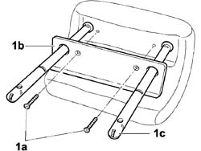
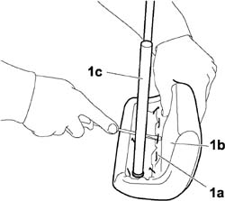
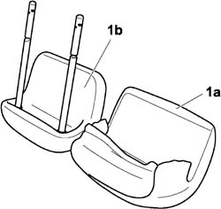
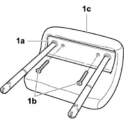

7050D51 (One), HEAD RESTRAINT COVER left or right, for rear seat - R.R. with head restraint removed
- Path
- Procedures > 70 FITTINGS > 7050 REAR SEATS > 7050D REAR SEAT COVERS/UPHOLSTERY > 7050D51 (One), HEAD RESTRAINT COVER left or right, for rear seat - R.R. with head restraint removed
- Kind
- repair procedure (removal / refitting; the operation number is the code)
- Applies to
- engines: 1.4 8v, 1.6 16v, 1.3 JTD 16V, 1.9 JTD 8V; all production periods
- Interactive page
- https://sloeber94.github.io/elrnDB-fDbl/en/#/2585211
Applies to: engines: 1.4 8v, 1.6 16v, 1.3 JTD 16V, 1.9 JTD 8V; all production periods; only with equipment: 7 seater and Doblò trim level
 Removing
Removing
 Refitting
Refitting1. Unscrew bolts (1a) and withdraw moulding (1b) from head restraint pins (1c).

Applies to: engines: 1.4 8v, 1.6 16v, 1.3 JTD 16V, 1.9 JTD 8V; all production periods; only with equipment: 7 seater and Doblò trim level
1. Take out the metal staples (1a) securing trim (1b) to head restraint (1c).

Applies to: engines: 1.4 8v, 1.6 16v, 1.3 JTD 16V, 1.9 JTD 8V; all production periods; only with equipment: 7 seater and Doblò trim level
1. Withdraw trim (1a) from head restraint (1b).

Applies to: engines: 1.4 8v, 1.6 16v, 1.3 JTD 16V, 1.9 JTD 8V; all production periods; only with equipment: 7 seater and Doblò trim level
Refitting
RemovingReplace the damaged part.
Fit the trim to the head restraint padding.
User metal staples to secure the trim to the head restraint.
1. Position moulding (1a) and tighten bolts (1b) securing it to head restraint (1c).
